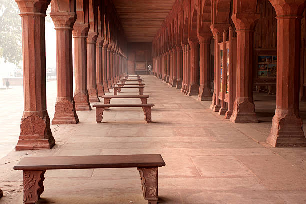
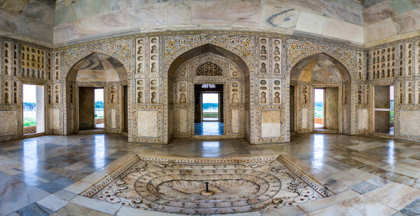
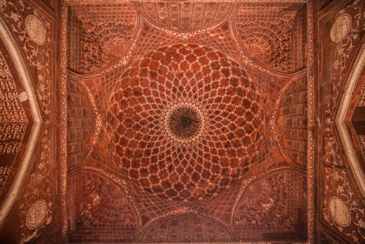

TAJ MAHAL
Marble, I perceive, covers a multitude of sins
An immense mausoleum of white marble, built in Agra between 1631 and 1648 by order of the
Mughal emperor Shah Jahan in memory of his favourite wife, the Taj Mahal is the
jewel of Muslim art in India and one of the universally admired masterpieces of the world's heritage.

AUTHENTICITY
The tomb, mosque, guest house, main gate and the overall Taj Mahal complex have maintained the conditions of authenticity at the time of inscription.
Although an important amount of repairs and conservation works have been carried out right from the
British period in India these have not compromised to the original qualities of the buildings.
Future conservation work will need to follow guidelines that ensure that qualities such as form and design continue to be preserved.


